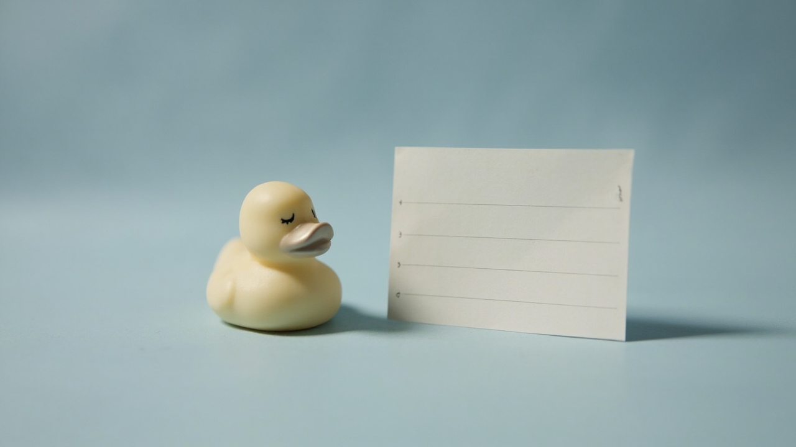
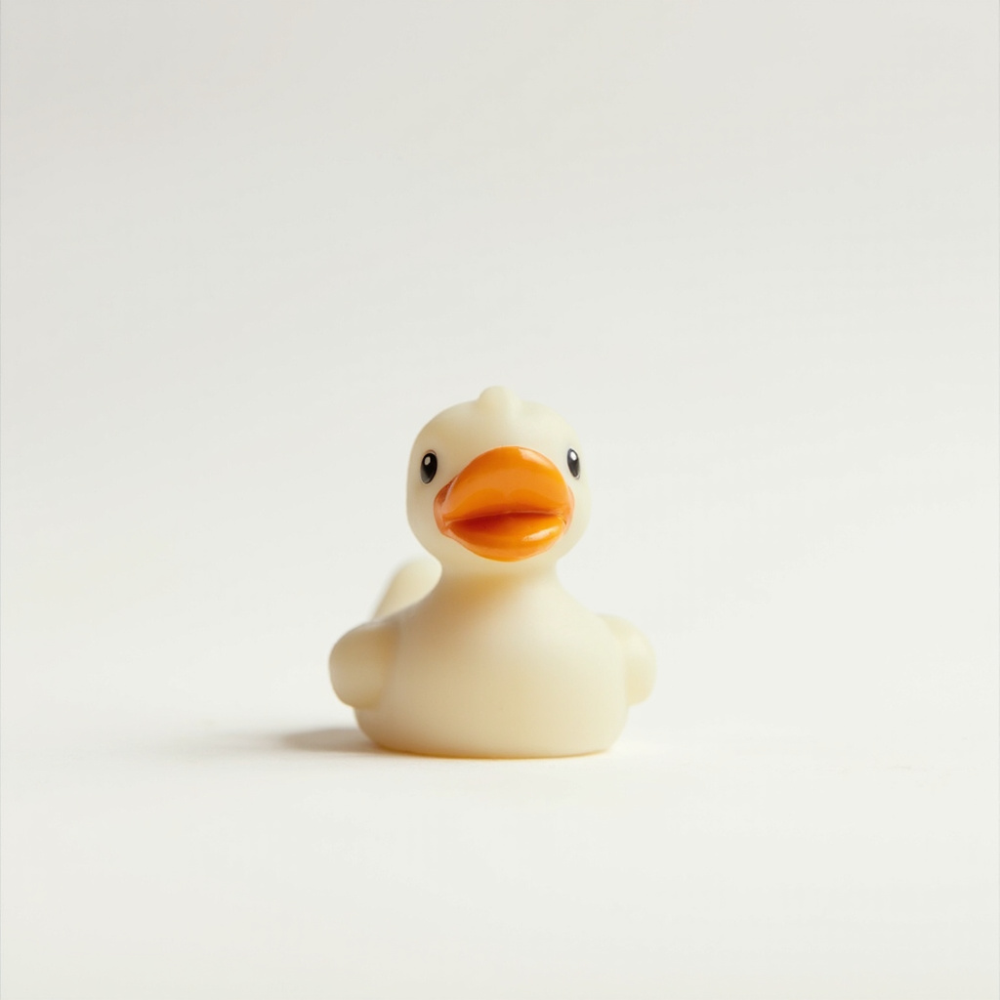
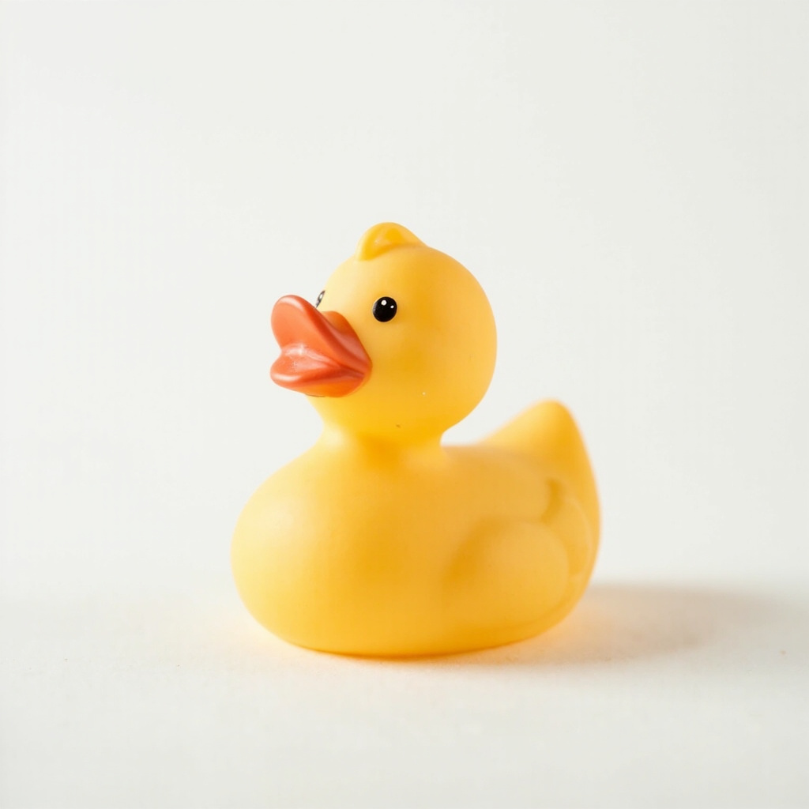
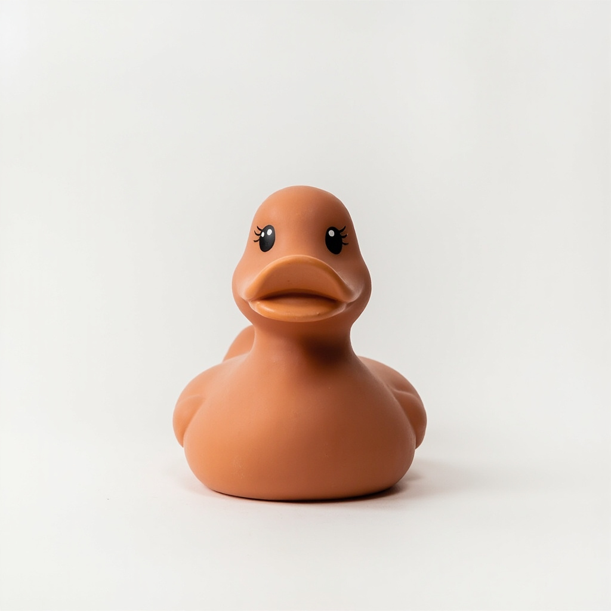
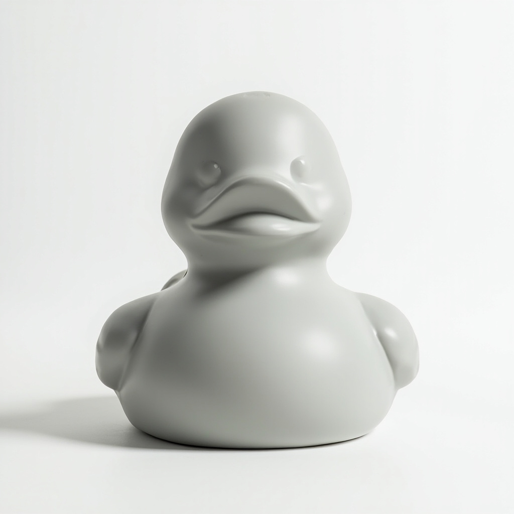
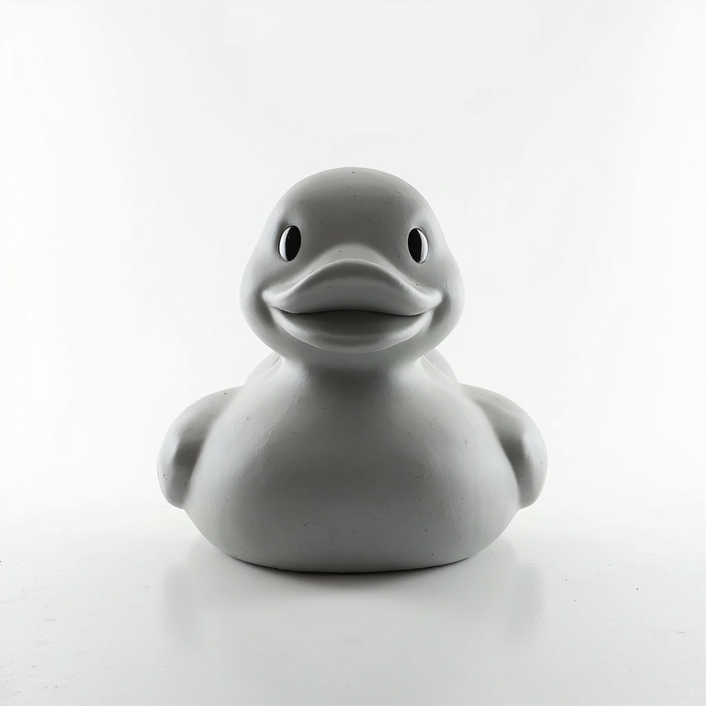

FLX-000 / COVER
Field study no. 28
A specimen at rest. The plate from which the rest of the studies are cropped.

BEFORE COLOURS.
BEFORE LOGOS.
BEFORE SCALE.
FLUX-S028 · FIELD NOTE 01
Strong objects don’t start with colour or finish. They start with scale. The Quacktory size ladder is a documentary exercise: six specimens, one silhouette, five orders of magnitude. Each study answers a different question — what does a duck become at 4 cm, at 15 cm, at 1.5 m? Read the ladder from left to right. Click any node to open its dossier.
PLATE 02 · SIZE LADDER
Click a node to open its dossier.
PLATE 03 · CATALOG
FLX-000 / COVER
A specimen at rest. The plate from which the rest of the studies are cropped.

FLX-M01 · MICRO
Matte warm ivory. A pocket-sized reference object. Studied at eye level.

FLX-M02 · CLASSIC
Warm amber matte. The most-photographed specimen in the series.

FLX-D03 · DESIGNER
Muted terracotta with a stone-matte hand. The directional object of the plate.

FLX-M04 · MEGA
Pale stone grey. Reads as a small object at full-room distance, not a toy.

FLX-A05 · ARCHITECT
Architectural concrete grey. Studied indoors, in plinth light, against a wall.